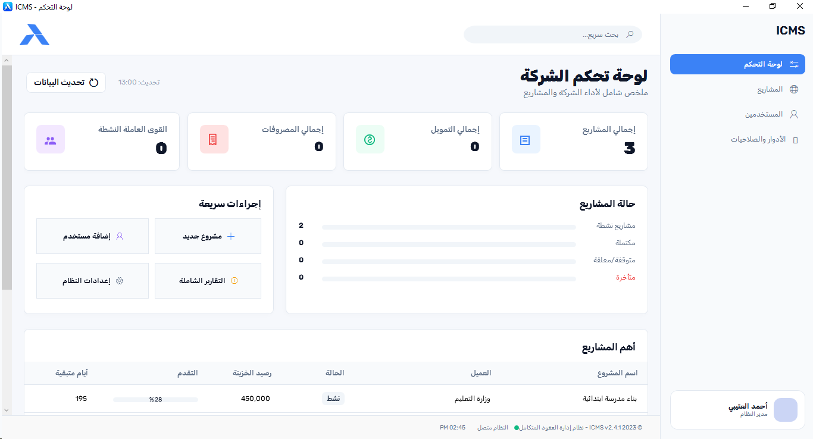
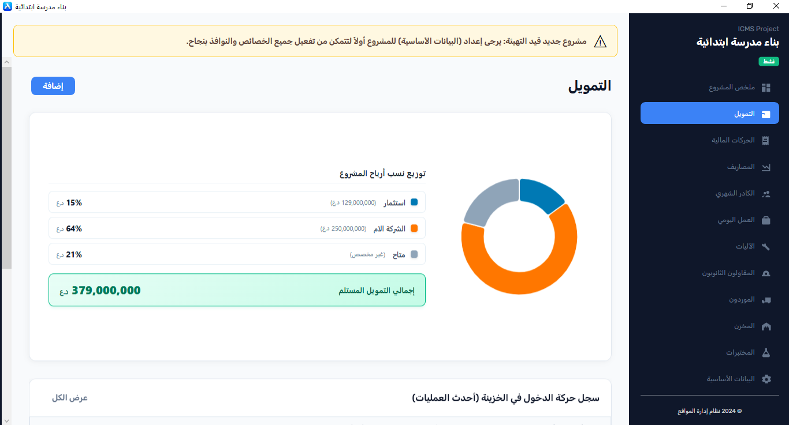
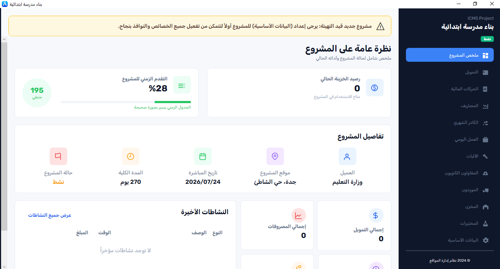
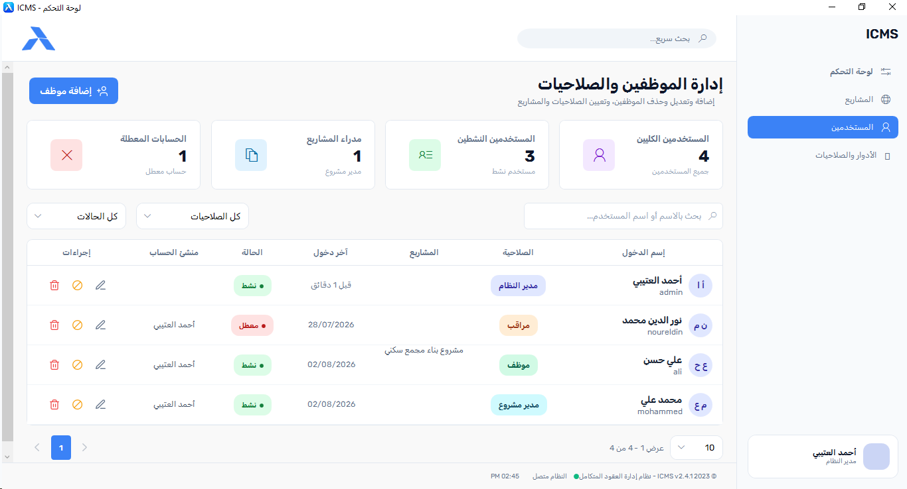
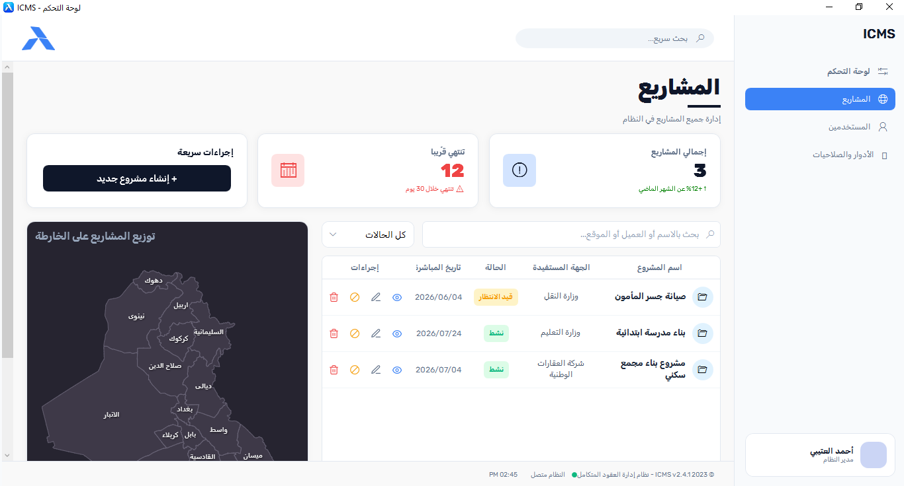

إدارة متكاملة لحسابات المشاريع، المخازن، عمال الأجور، والمقاولين الثانويين
صُمم نظام ICMS لربط الحسابات المكتبية بواقع مواقع العمل الإنشائية في العراق: من تحديد نسب رأس مال الشركاء والمستثمرين واحتساب الأرباح، مروراً بتتبع أذونات المواد وحركات المخازن، وحتى تسوية مستحقات المقاولين الثانويين وكشوفات عمال الأجر اليومي؛ في نظام مكتبي واحد مستقل يعمل محلياً دون الحاجة لاتصال إنترنت.


كيف يعالج البرنامج تفاصيل العمل الميداني في شركات المقاولات؟
بدلاً من السجلات العامة التي لا تلائم قطاع الإنشاءات، قُسمت وظائف ICMS لتعكس دورة حياة المشروع الفعلي خطوة بخطوة:
حسابات التمويل، مساهمات الشركاء، وتوزيع نسب الأرباح
في معظم شركات المقاولات يدخل في المشروع أكثر من شريك أو ممول بنسب تمويل مختلفة. يتيح النظام تسجيل مبالغ رأس المال لكل شريك، وتحديد نسبته في العقد، واحتساب مستحقاته وأرباحه بشكل آلي عند استلام السلف والدفعات.
- • إصدار سندات الصرف والقبض ومذكرات الدفع وتصنيفها حسب بنود المشروع.
- • تتبع حركة الخزينة والصناديق الفرعية في كل موقع عمل على حدة.
- • كشوفات حساب ختامية تبين الربح الفعلي بعد استبعاد كلفة المواد والعمالة والمقاولين.




المخازن وسلاسل التوريد وضبط نسبة الهدر
أكبر مصادر استنزاف الأرباح في قطاع المقاولات هو فوضى المواد الإنشائية في المواقع. يوفر البرنامج دورة مخزنية كاملة ترصد المواد من إرسالية المورد حتى تفريغها واستهلاكها الفعلي.
- • أذونات استلام مخزني وصرف موقعي مرتبطة باسم المهندس المستلم.
- • توثيق المناقلات الداخلية للمواد والمعدات بين مشروع وآخر لمنع الازدواجية.
- • تسجيل التالف والهدر (Wastage) ومقارنة الكميات المستهلكة بجداول الكميات (BOQ).
- • سجل آليات وسيارات الشركة ومصاريف الوقود والصيانة لكل آلية.
حسابات المقاولين الثانويين وعمال الأجور اليومية
يعالج النظام كشوفات العمل اليومية والأسبوعية التي ترهق الإدارة المالية: من عمال اليومية والأسطاوات إلى مقاولي الباطن (حدادة، نجارة، صحيات، بناء، وغيرها).
- • المقاولون الثانويون: إدخال بنود الأعمال، احتساب الكميات المنفذة، وخصم المواد المسلمة إليهم من مستحقاتهم آلياً.
- • عمال الأجر اليومي: تسجيل ساعات العمل العادية والإضافية، السلف اليومية، وإصدار قوائم التصفية الأسبوعية بنقرة زر.
- • الكادر الثابت: سلم رواتب المهندسين والموظفين الشهرية، الاستقطاعات، ومكافآت الإنجاز.




الخارطة الجغرافية التفاعلية وأرشيف الفحوصات الهندسية
تمنح الخارطة التفاعلية إدارة الشركة نظرة بصرية شاملة على مواقع وتوزّع مشاريعها في بغداد، الأنبار، أربيل، البصرة وسائر المحافظات مع استعراض موقف الإنجاز المالي والتنفيذي لكل موقع بنقرة واحدة.
- • تموضع جغرافي للمشاريع مع إحصائيات سريعة للعقد والمدة المتبقية.
- • الفحوصات الهندسية والمختبرات: أرشفة نتائج فحص مكعبات الخرسانة (7 و 28 يوم)، فحص حديد التسليح، وفحوصات التربة والدفان.
- • توثيق مطابقة المواصفات القياسية وسجل الدفعات المستحقة للمختبرات الإنشائية.
استعراض شاشات البرنامج
شاشات منظمة مصممة للإدخال السريع للبيانات، واستخراج التقارير دون تعقيد:
المواصفات الفنية ومتطلبات التشغيل
لماذا صُمم ICMS كبرنامج مكتبي (Desktop ERP) وليس كمنصة سحابية عامة؟
| بيئة التشغيل المعتمدة | Windows 10، Windows 11، أو Windows Server (64-bit). |
| المعمارية البرمجية | مبني باستخدام C# و Microsoft .NET مع واجهات WPF وتسريع رسومي SkiaSharp لضمان سرعة معالجة الجداول الضخمة دون بطء. |
| محرك قاعدة البيانات | قاعدة بيانات محلية مشفرة (SQLite / Local Server) تحفظ كافة سجلاتك على القرص الصلب الخاص بشركتك. |
| الاعتماد على الإنترنت | غير مطلوب نهائياً: يعمل البرنامج بكامل طاقته وميزاته في المواقع الميدانية المنقطعة عن الشبكة. |
| العمل المشترك (Multi-user) | يدعم العمل المتعدد على شبكة الشركة الداخلية (Local LAN)؛ حيث يمكن للمحاسب وأمين المخزن والمدير العمل معاً مع تحديد صلاحية كل مستخدم. |
| النسخ الاحتياطي | أداة نسخ احتياطي مدمجة بضغطة زر واحدة لتصدير واسترجاع نسخة كاملة من بيانات الشركة في أي وقت. |
ترخيص دائم — بدون أي اشتراكات دورية
تتجنب معظم شركات المقاولات البرمجيات السحابية بسبب التكاليف الشهرية المتراكمة وخطورة ربط البيانات الحساسة بسيرفرات خارجية. يمنحك ICMS ملكية دائمة بدفعة واحدة واضحة:
ترخيص النسخة الكاملة لشركة المقاولات
يشمل البرنامج بكافة وحداته (المالية، المخازن، المقاولين، الكوادر، والمختبرات)
الأسئلة الشائعة
هل يمكن تشغيل البرنامج على أكثر من حاسوب في الشركة؟
نعم. يمكن تنصيب قاعدة البيانات على الحاسوب الرئيسي (السيرفر المحلي للشركة)، وربط حواسيب المحاسبين والمهندسين وأمناء المخازن عبر الشبكة الداخلية (Local Network)، بحيث يرى كل موظف الشاشات المسموح له بها فقط.
ماذا يحدث لبياناتنا في حال حدوث عطل في الحاسوب؟
يتضمن البرنامج وظيفة نسخ احتياطي فورية (Backup). يمكنك تصدير نسخة كاملة من قاعدة البيانات بملف واحد مشفر وحفظه على فلاش ميموري أو قرص صلب خارجي دورياً. في حال استبدال الحاسوب، يتم استرجاع كافة المشاريع والحسابات خلال دقيقتين.
هل أحتاج إلى خبرة برمجية لتشغيل البرنامج وتعديل نسب الشركاء؟
لا، الواجهات صممت بلغة عربية واضحة ومصطلحات محاسبية وإنشائية معتادة في السوق العراقي. كما أن جلسة التدريب المشمولة مع البرنامج تضمن بدء إدخال البيانات واستخراج التقارير بكل سهولة من اليوم الأول.
هل يمكننا مشاهدة البرنامج يعمل ببيانات مشاريع حقيقية قبل اتخاذ القرار؟
نعم بالتأكيد. نسعد بتقديم جلسة استعراض توضيحي (Live Demo) عبر الإنترنت أو بالحضور المباشر لعرض آلية عمل شاشات التمويل، المخازن، عمال الأجور، والتقارير المالية والتأكد من ملاءمتها لأسلوب عمل شركتكم.
لطلب البرنامج أو حجز موعد استعراض توضيحي
يمكنكم التواصل مباشرة مع المهندس المسؤول لمناقشة متطلبات شركتكم وترتيب جلسة الاستعراض: